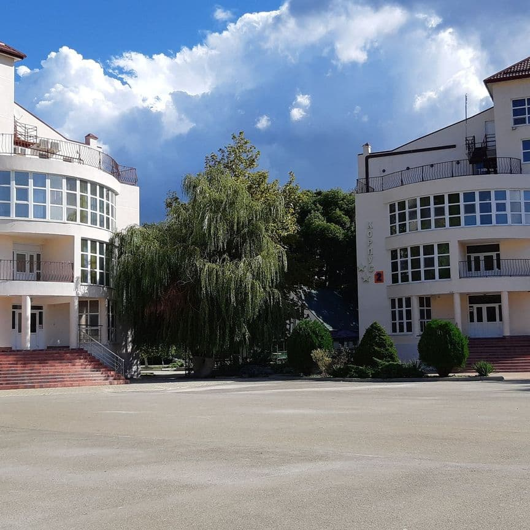
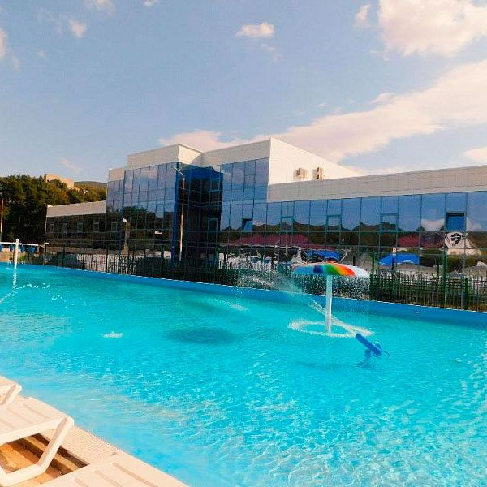
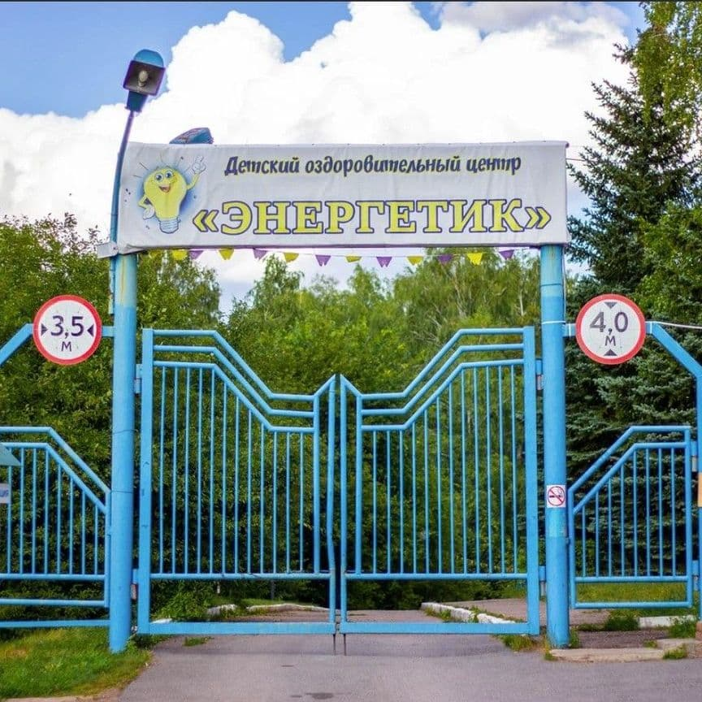
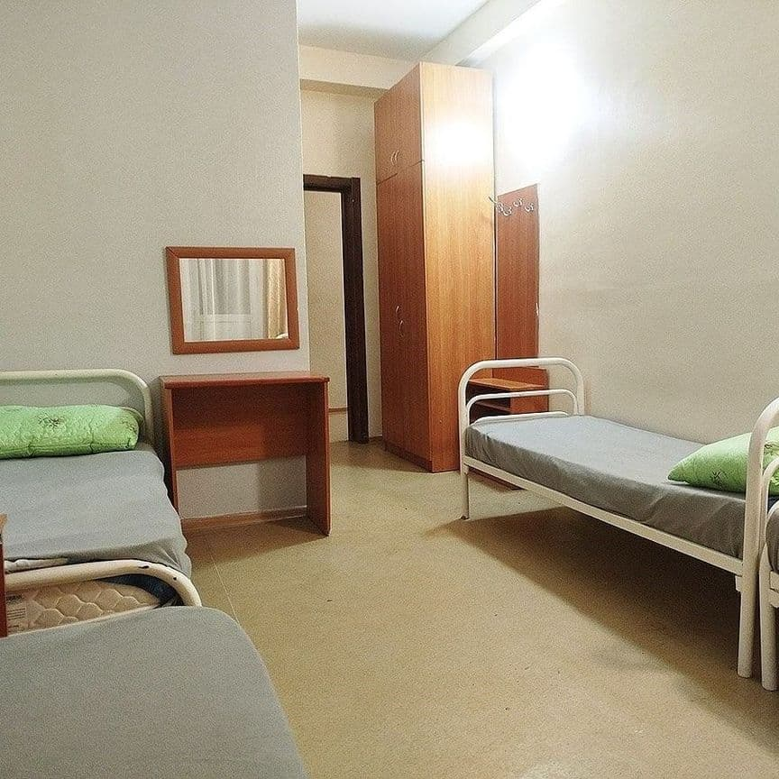
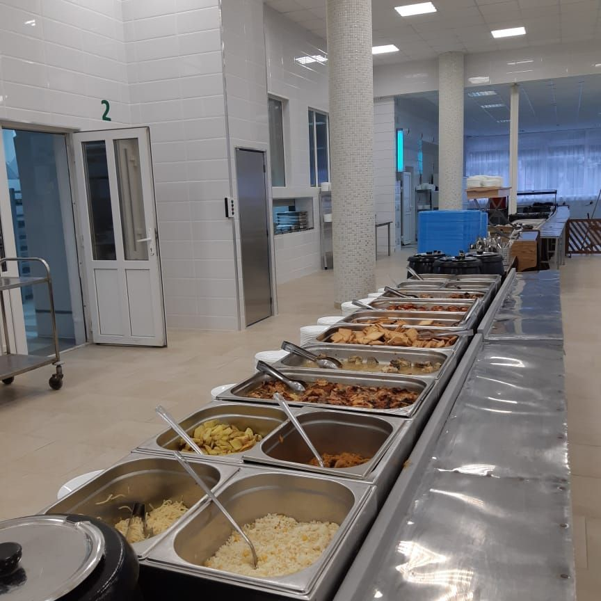

📍 Местоположение
Лагерь располагается в 14 км от Анапы, в долине Сукко, между морем и роскошной можжевеловой рощей заповедника Утриш, надышавшись чистейшим воздухом которой, не заболеешь целый год, на 10 га прекрасно озеленённой территории.

Инфраструктура
• Спортивный бассейн
• Хореографический зал
• Хореографический зал
• Волейбольная площадка с тартановым покрытием
• Волейбольная площадка с искусственным травяным покрытием
• Футбольная (гандбольная) площадка с искусственным травяным покрытием
• Футбольная площадка с естественным травяным покрытием
площадка для пляжного футбола и волейбола
• Футбольная площадка с естественным травяным покрытием
площадка для пляжного футбола и волейбола
• Площадка для большого тенниса и настольного тенниса с 2 столами
• Кинозал для просмотра видеофильмов
• Летняя эстрада
• Игровые площадки
• Беседки для отдыха, а также для проведения кружков и настольных игр
• Магазин, где дети могут приобрести сладости и сувениры
• Кинозал для просмотра видеофильмов
• Летняя эстрада
• Игровые площадки
• Беседки для отдыха, а также для проведения кружков и настольных игр
• Магазин, где дети могут приобрести сладости и сувениры

Безопасность
• Территория оздоровительного учреждения охраняется круглосуточно постоянно в течение всего срока нахождения в нём детей.
наличие круглосуточного видеонаблюдения на территории лагеря.
пропускной режим, обеспечение отсутствия посторонних лиц.
• На территории детского оздоровительного лагеря «Энергетик» расположен медицинский корпус, имеющий изолятор на 4 бокса общей вместимостью 16 человек. Медицинский пункт работает круглосуточно на протяжении всей смены, обеспечен необходимым запасом перевязочных материалов и современных медикаментов.
• Медицинские работники оказывают первичную, в том числе доврачебную, врачебную и специализированную, медико-санитарную помощь, проводят все необходимые действия для выявления заболевших и предотвращения массовых заболеваний
наличие круглосуточного видеонаблюдения на территории лагеря.
пропускной режим, обеспечение отсутствия посторонних лиц.
• На территории детского оздоровительного лагеря «Энергетик» расположен медицинский корпус, имеющий изолятор на 4 бокса общей вместимостью 16 человек. Медицинский пункт работает круглосуточно на протяжении всей смены, обеспечен необходимым запасом перевязочных материалов и современных медикаментов.
• Медицинские работники оказывают первичную, в том числе доврачебную, врачебную и специализированную, медико-санитарную помощь, проводят все необходимые действия для выявления заболевших и предотвращения массовых заболеваний

Проживание
Дети проживают в уютных, светлых, просторных и теплых корпусах, коттеджах, как со всеми удобствами, так и с удобствами на этаже. Домики коттеджного типа: 1-2 этажные корпуса, каждый домик рассчитан на один отряд, в комнате по 3-6 человек, удобства на этаже. 3-4 этажные корпусах с удобствами в комнате (душ, туалет, умывальник) или на блок из двух комнат, проживание по 3-5 человек в комнате. В каждом корпусе ДОЛ «Энергетик» расположен кулер с питьевой водой.
Горячая и холодная вода – круглосуточно. Влажная уборка комнат производится два раза в день.
В комнате – кровати, тумбочки, шкаф. Смена постельного белья и полотенец – 1 раз в 7 дней, пляжное полотенце иметь с собой.
Горячая и холодная вода – круглосуточно. Влажная уборка комнат производится два раза в день.
В комнате – кровати, тумбочки, шкаф. Смена постельного белья и полотенец – 1 раз в 7 дней, пляжное полотенце иметь с собой.

Питание
Ежедневное сбалансированное 5-ти разовое питание (завтрак, обед, полдник, ужин, сонник) с возможностью выбора блюд по типу «шведский стол» с обязательным включением в рацион мяса, фруктов и овощей с учетом требований СанПиН 2.4.4.3155-13 «Санитарно-эпидемиологические требования к устройству, содержанию и организации работы стационарных организаций отдыха и оздоровления детей» и иных санитарно-гигиенических норм и правил, установленных действующим законодательством;
осуществляется витаминизация блюд;
прием пищи организован в строгом соответствии с распорядком дня, утвержденным и действующим на территории оздоровительного учреждения;
для детей организован круглосуточно питьевой режим;
пищеблок оснащен в соответствии с санитарными нормами и правилами.
осуществляется витаминизация блюд;
прием пищи организован в строгом соответствии с распорядком дня, утвержденным и действующим на территории оздоровительного учреждения;
для детей организован круглосуточно питьевой режим;
пищеблок оснащен в соответствии с санитарными нормами и правилами.
Галерея


Путевки в ДОЛ Энергетик
1 смена (21 день) 01.06.26 - 21.06.26
Сроки с жд проездом из СПб 30.05.26 - 23.06.25
2 смена (21 день) 23.06.26 - 13.07.26
Сроки с жд проездом из СПб 21.06.26 - 15.07.26
3 смена (21 день) 17.07.26 - 06.08.26
Сроки с жд проездом из СПб 15.07.26 - 08.08.26
4 смена (21 день) 08.08.26 - 28.08.26
Сроки с жд проездом из СПб 06.08.26 - 30.08.26
В стоимость путевки входит
• Проживание в номерах 1-2 категории;
• 5-ти разовое питание;
• Культурно-досуговые мероприятия по программе лагеря;
• Медико-санитарная помощь в лагере;
• Пользование пляжем
• 5-ти разовое питание;
• Культурно-досуговые мероприятия по программе лагеря;
• Медико-санитарная помощь в лагере;
• Пользование пляжем
• пользование спортивными объектами лагеря для тренировок спортивных групп и творческих коллективов - 2 часа в день пользование объектами спорткомплекса лагеря «Энергетик» (спортплощадки, спортивные и хореографические залы) и спортинвентарем в установленное время
• Сопровождение из СПб (20+1)
• Сопровождение из СПб (20+1)
При предоставлении Сертификата вычитается сумма в размере 26 195,40 руб. Подробнее
Документы и справки
Документы и справки для поездки и предоставления в детский лагерь/организацию отдыха и оздоровления детей для административной и медицинской служб
Наличие всех документов родитель должен проверить перед отправкой ребенка в лагерь.
Документы необходимо вложить в пластиковую папку и положить в багаж ребенка.
1. Оригинал + Копия (обязательно!) свидетельства о рождении или паспорта
2. Копия страхового полиса обязательного медицинского страхования (ОМС).
3. Копия прививочного сертификата
4. Медицинская справка по форме 079/У о состоянии здоровья ребенка: сведения о прививках (прививка от кори, дифтерии обязательна), о перенесенных заболеваниях, в том числе инфекционных, справка лечебной сети об отсутствии контакта с инфекционными больными в течении 21 дня до момента заезда в лагерь. Справка оформляется в поликлинике по месту жительства, с заключением врача о состоянии здоровья ребенка и только при
отсутствии медицинских противопоказаний к направлению ребенка в лагерь.
5. Справка об эпидемиологической обстановке в районе проживания отдыхающего и об отсутствии контактов с инфекционными больными. Справка берется за 3 дня до отъезда в СЭС по месту жительства, либо в инфекционном кабинете поликлиники и заверяется печатью. Справка свидетельствует о том, что ребенок не контактировал с инфекционными больными на протяжении 14 дней до ее выдачи.
6. Внимание! На 1-ю смену предоставляется справка об отсутствии контактов с инфекционными больными в школе.
7. Медицинская справка от дерматолога о состоянии кожных покровов и педикулёзе. Справку необходимо взять не ранее,
чем за 10 дней до начала смены.
8. Результат анализов на гельминтов (я/глист + простейшие)
9. Результат анализов энтеробиоз
Важно! Все анализы необходимо сдать не ранее, чем за 10 дней до начала смены!
10. Медицинская справка от дерматолога о состоянии кожных покровов и педикулёзе. Справку необходимо взять не ранее, чем за 10 дней до начала
11. Заполненное родителями (законным представителем) несовершеннолетнего отдыхающего информированное добровольное согласие на
медицинское вмешательство Организации отдыха и оздоровления по установленной форме (бланк можно скачать на нашем САЙТЕ см. ниже или в нашей
группе В КОНТАКТЕ).
12. Согласие на обработку персональных данных Организации отдыха и оздоровления
13. Анкета об особенностях здоровья и характера ребенка, дополнительные анкеты, расписки и согласия согласно требованиям
детского лагеря, которые необходимо законному представителю ребенка скачать, распечатать, заполнить, подписать и вложить в пакет документов для лагеря.
Бланки анкет и документов для заполнения, можно скачать с нашего сайта здесь или в нашей группе В КОНТАКТЕ.
14. Дети старше 10 лет, на момент посадки в поезд, выезжающие на 1 смену до 1 июня, должны иметь справку учащегося, которую нужно взять в администрации учебного заведения.
15. В случае, если забирать ребенка из лагеря будет не родитель (законный представитель) и не сопровождающий организованной группы, иное лицо требуется Согласие (или доверенность) от родителей (законного представителя) в пользу третьих лиц, заверенное нотариально или должностным лицом органа опеки и попечительства, на вывоз ребенка из лагеря по окончании смены.
Документы необходимо вложить в пластиковую папку и положить в багаж ребенка.
1. Оригинал + Копия (обязательно!) свидетельства о рождении или паспорта
2. Копия страхового полиса обязательного медицинского страхования (ОМС).
3. Копия прививочного сертификата
4. Медицинская справка по форме 079/У о состоянии здоровья ребенка: сведения о прививках (прививка от кори, дифтерии обязательна), о перенесенных заболеваниях, в том числе инфекционных, справка лечебной сети об отсутствии контакта с инфекционными больными в течении 21 дня до момента заезда в лагерь. Справка оформляется в поликлинике по месту жительства, с заключением врача о состоянии здоровья ребенка и только при
отсутствии медицинских противопоказаний к направлению ребенка в лагерь.
5. Справка об эпидемиологической обстановке в районе проживания отдыхающего и об отсутствии контактов с инфекционными больными. Справка берется за 3 дня до отъезда в СЭС по месту жительства, либо в инфекционном кабинете поликлиники и заверяется печатью. Справка свидетельствует о том, что ребенок не контактировал с инфекционными больными на протяжении 14 дней до ее выдачи.
6. Внимание! На 1-ю смену предоставляется справка об отсутствии контактов с инфекционными больными в школе.
7. Медицинская справка от дерматолога о состоянии кожных покровов и педикулёзе. Справку необходимо взять не ранее,
чем за 10 дней до начала смены.
8. Результат анализов на гельминтов (я/глист + простейшие)
9. Результат анализов энтеробиоз
Важно! Все анализы необходимо сдать не ранее, чем за 10 дней до начала смены!
10. Медицинская справка от дерматолога о состоянии кожных покровов и педикулёзе. Справку необходимо взять не ранее, чем за 10 дней до начала
11. Заполненное родителями (законным представителем) несовершеннолетнего отдыхающего информированное добровольное согласие на
медицинское вмешательство Организации отдыха и оздоровления по установленной форме (бланк можно скачать на нашем САЙТЕ см. ниже или в нашей
группе В КОНТАКТЕ).
12. Согласие на обработку персональных данных Организации отдыха и оздоровления
13. Анкета об особенностях здоровья и характера ребенка, дополнительные анкеты, расписки и согласия согласно требованиям
детского лагеря, которые необходимо законному представителю ребенка скачать, распечатать, заполнить, подписать и вложить в пакет документов для лагеря.
Бланки анкет и документов для заполнения, можно скачать с нашего сайта здесь или в нашей группе В КОНТАКТЕ.
14. Дети старше 10 лет, на момент посадки в поезд, выезжающие на 1 смену до 1 июня, должны иметь справку учащегося, которую нужно взять в администрации учебного заведения.
15. В случае, если забирать ребенка из лагеря будет не родитель (законный представитель) и не сопровождающий организованной группы, иное лицо требуется Согласие (или доверенность) от родителей (законного представителя) в пользу третьих лиц, заверенное нотариально или должностным лицом органа опеки и попечительства, на вывоз ребенка из лагеря по окончании смены.
Наличие всех документов родитель обязуется проверить заранее, перед отправко1 ребенка в лагерь.
Документы распечатайте и заполните, вместе со свидетельством рождения или паспортом ребенка рекомендуем
вложить в файл или конверт и положить в сумку ребенка (рекомендуем не давать документы ребенку в руки во избежание их утраты).
ВНИМАНИЕ! Дети, прибывшие без документов, в том числе без медицинских документов, либо с документами, оформленными ненадлежащим образом, а также дети состояние здоровья, которых не соответствует предоставленным документам, либо дети с заболеваниями, пребывания с которыми в оздоровительных учреждениях противопоказано, в место размещения не принимаются. Возвращение ребенка осуществляется за счет Заказчика.
Стоимость недополученных услуг по договору Заказчику не компенсируется.
В случае самостоятельного заезда в детский лагерь, родитель обязуется обеспечить заезд ребенка к началу смены с полным пакетом
необходимых документов. В случае опоздания Лагерь имеет право отказать в приеме ребенка.
Настоятельно рекомендуем НЕ давать ребенку в поездку: ноутбуки, планшеты, дорогие телефоны и другие дорогостоящие предметы.
Документы распечатайте и заполните, вместе со свидетельством рождения или паспортом ребенка рекомендуем
вложить в файл или конверт и положить в сумку ребенка (рекомендуем не давать документы ребенку в руки во избежание их утраты).
ВНИМАНИЕ! Дети, прибывшие без документов, в том числе без медицинских документов, либо с документами, оформленными ненадлежащим образом, а также дети состояние здоровья, которых не соответствует предоставленным документам, либо дети с заболеваниями, пребывания с которыми в оздоровительных учреждениях противопоказано, в место размещения не принимаются. Возвращение ребенка осуществляется за счет Заказчика.
Стоимость недополученных услуг по договору Заказчику не компенсируется.
В случае самостоятельного заезда в детский лагерь, родитель обязуется обеспечить заезд ребенка к началу смены с полным пакетом
необходимых документов. В случае опоздания Лагерь имеет право отказать в приеме ребенка.
Настоятельно рекомендуем НЕ давать ребенку в поездку: ноутбуки, планшеты, дорогие телефоны и другие дорогостоящие предметы.